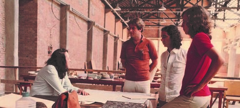

Lina: arquitetura do século XX
Achillina Bo, mais conhecida como Lina Bo Bardi, foi uma das grandes arquitetas na arquitetura brasileira do século XX. Suas obras constituem-se não só com projetos de arquitetura, mas também envolvem desenho de mobiliários, artes plásticas, design gráfico e trabalhos em cenografia.
"O tempo é uma espiral. A beleza em si não existe. Existe por um período histórico, depois muda o gosto. Eu procurei, no Museu de Arte de São Paulo, retomar certas posições. Não procurei a beleza, procurei a liberdade. Os intelectuais não gostaram, o povo gostou: ‘Sabe quem fez isso? Foi uma mulher!"
Sua história
Lina Bo Bardi, nascida em 5 de dezembro de 1915 em Roma, na Itália, estudou na Faculdade de Arquitetura da Universidade de Roma na década de 1930, e se mudou para Milão onde acabou ganhando notoriedade. Durante a II Guerra Mundial, seu escritório foi bombardeado e com isso a arquiteta enfrentou um difícil período que a levou, juntamente com seu marido, o jornalista Pietro Maria Bardi, a vir para o Brasil.
Aqui ela se estabeleceu permanentemente e se naturalizou brasileira em 1951. Foi nesse novo cenário que ela encontrou novas possibilidades e ideias na arquitetura moderna brasileira, desenvolvendo uma grande admiração pela cultura popular, que se tornou uma das principais influências do seu trabalho. Lina traz uma abordagem de um espaço construído pelas pessoas, preenchido pelo uso cotidiano.
Alguns de seus projetos são a recuperação do Solar do Unhão, conjunto arquitetônico do século XVI da Bahia e catalogado como patrimônio histórico na década de 1940; e a Casa de Vidro, sua residência no bairro do Morumbi, em São Paulo, projetada em 1951 e que hoje em dia é sede do Instituto Bardi. Em 1957, ela começou a construção da nova sede do MASP, na Avenida Paulista, uma obra de destaque com um vão de 70 metros sobre uma praça pública, palco de diversas manifestações populares até os dias atuais. Vale destacar ainda o projeto do SESC Pompéia, executado por ela no final da década de 1970, foi a reinvenção da velha fábrica existente: as funções da antiga estrutura foram reprojetadas e os usos populares foram mantidos por meio de diferentes elementos, de modo que a obra se tornou forte referência para a história da arquitetura. Lina se manteve trabalhando até o fim de sua vida, em 1992. Ela faleceu numa época em que ainda mantinha intensa produção cultural.

- Autora: Mariana Seidel
- Aluna de Front-end {reprograma}
- Link para GitHub